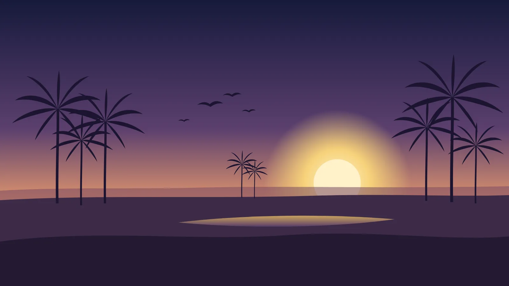
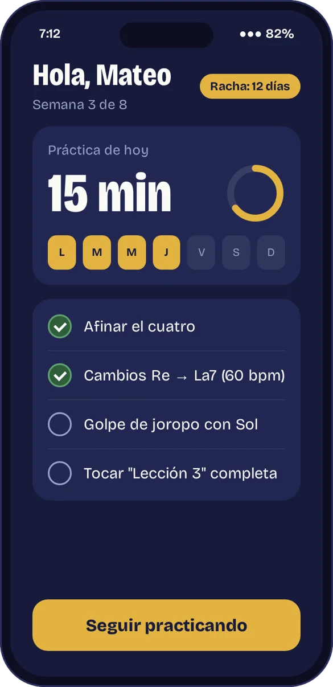
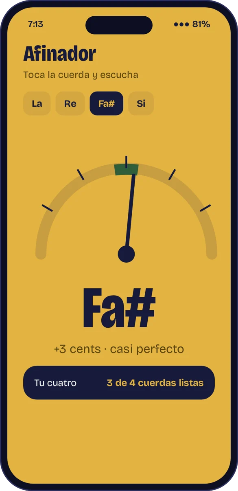
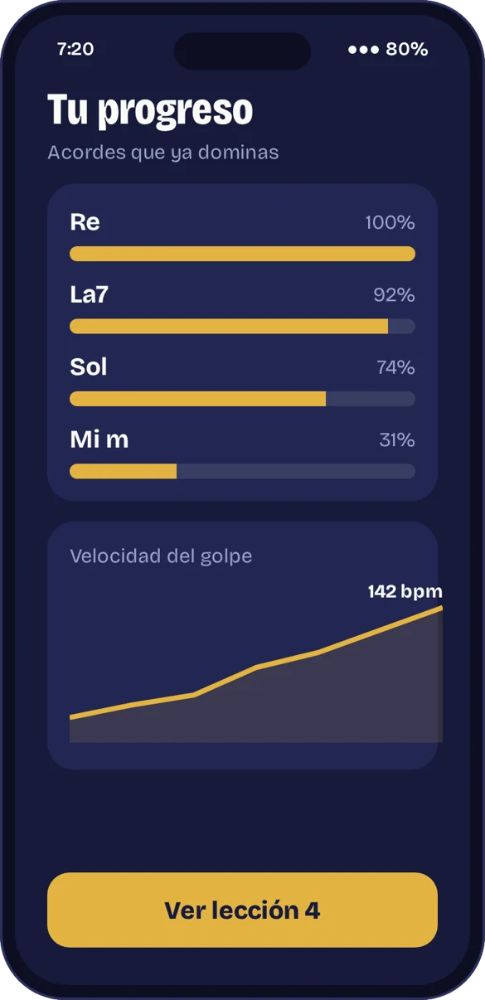

Semana 1
Rasgueo hacia abajo, 82 pulsos por minuto. Todavía se nota la pausa al cambiar de acorde.
Esto es un cuatro llanero de verdad, afinado La, Re, Fa#, Si. Arrastra sobre las cuerdas para tocarlo. En 8 semanas vas a tocar joropo con el tuyo.
Haz clic y arrastra sobre las cuerdasDesliza el dedo de lado a lado
Teclado: 1–6 cambia de acorde, Espacio rasguea.
Reto: toca la progresión de la lección 1
Elige el acorde marcado y rasguea. Si fallas, no pasa nada: vuelve a intentar.
Veinte segundos para entender cómo aprende uno con Cuatro: ves dónde va cada dedo, oyes cómo debe sonar y practicas al mismo ritmo de la pantalla.
Al final, los tres acordes se juntan en tu primer golpe de joropo.
Las dos grabaciones usan los mismos acordes. Lo que cambia es la mano derecha: el golpe, el apagado y el tiempo. Eso es lo que entrena Cuatro.
Rasgueo hacia abajo, 82 pulsos por minuto. Todavía se nota la pausa al cambiar de acorde.
Golpe de joropo completo a 178 pulsos, con maracas y bajo de fondo.
Cada semana sumas acordes y subes la velocidad del golpe. Toca una semana para ver qué aprendes.
Gráfico de barras y línea: los acordes dominados suben de 3 en la semana 1 a 12 en la semana 8, y la velocidad del golpe sube de 60 a 180 pulsos por minuto.




$0
$24.900al mes
$590.000una vez
Precios en pesos colombianos.
No. La ruta empieza en cómo coger el cuatro y afinarlo. No vas a leer partituras: todo se aprende con diagramas, audio y video.
Sí. Las dos primeras lecciones funcionan con el cuatro virtual de esta página. Cuando quieras, el kit trae uno de cedro hecho en Villavicencio.
Sí. Usa la misma afinación (La, Re, Fa#, Si) y los mismos acordes base.
Quince minutos al día, cinco días a la semana. La app arma la práctica según la semana en que vas.
En el plan Completo descargas las lecciones y practicas sin conexión. El progreso se sincroniza cuando vuelves a tener señal.